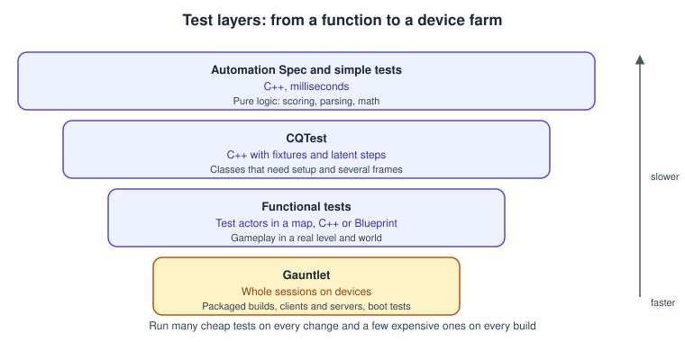
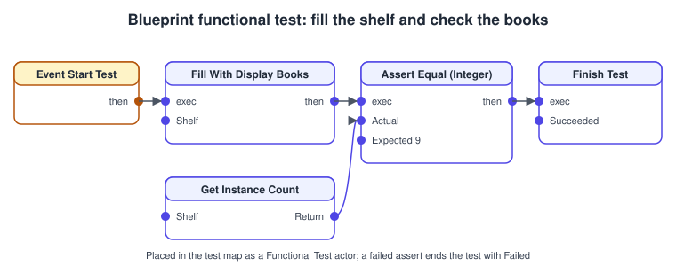
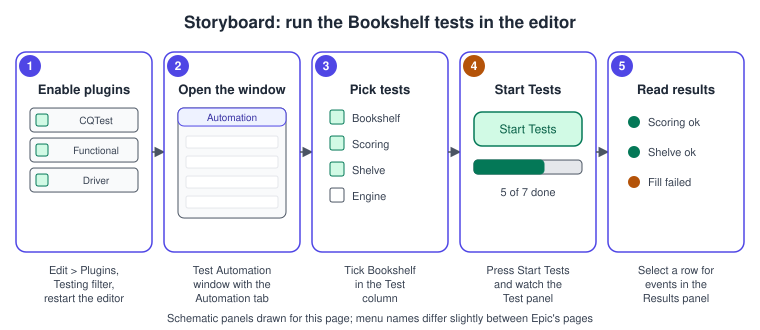

Testing and Automation
|
This content was generated with the assistance of AI and should be verified against the official documentation before being relied on in production. |
A game is hard to test because so much of it happens over time, in a world, with physics and input. Unreal Engine’s answer is a set of frameworks that cover different distances from the code: plain C++ tests that run in milliseconds, a behavior-style spec, the newer CQTest with fixtures, Functional Tests that run inside a map, and Gauntlet, which runs whole sessions of a packaged game on devices. This page explains what each one is for, how to write a complete test for the Bookshelf with each, and how to run them in the editor and in continuous integration.
The facts on this page were checked in November 2026 against the Unreal Engine 5.8 documentation (5.8 was released on 2026-06-17; the latest hotfix found is 5.8.4). The tests run in the editor and in packaged builds on Windows, macOS and Linux; Gauntlet also drives other platforms through device interfaces. Where the Bookshelf code is referenced, the classes are the ones from Profiling and Optimization and the module layout from Project Structure and Modules. The same task in Unity is on Unity: Testing and CI.
Which test for which question

| Framework | Runs | Use it for |
|---|---|---|
Automation Test Framework (simple and complex tests) |
C++, no UObject environment needed |
Pure logic and API-level checks; smoke tests that run at every start |
Automation Spec |
C++, behavior-driven (Describe, It) |
Readable expectations, asynchronous steps with |
CQTest |
C++, test classes with fixtures and latent steps |
Tests that need setup, teardown and several frames |
Functional Testing |
Test actors placed in a map, Blueprint or C++ |
Gameplay in a real level: spawn, move, check |
Automation Driver |
Simulated user input |
UI and input flows |
Gauntlet |
Whole sessions through the Unreal Automation Tool |
Packaged clients and servers on devices, boot tests, performance runs |
The Automation Test Framework
The framework is built directly in C++ and is not tied to the UObject environment. Tests are declared with macros and implemented by overriding virtual functions of FAutomationTestBase. Epic groups them by purpose:
-
Unit tests verify behavior at API level.
-
Feature tests cover system-level behavior such as Play in Editor, in-game statistics or changing the resolution.
-
Smoke tests are fast checks meant to run every time the editor, game or commandlet starts. Epic states that all smoke tests are intended to complete within one second.
-
Content stress tests check for crashes on broad content, for example by loading all maps or compiling all Blueprints.
-
Screenshot comparison lets QA compare screenshots between versions or builds to find rendering regressions.
Epic’s design guidelines apply to all of them. Do not assume the state of the game or editor, because tests can run out of order or in parallel. Delete the files a test generates when it completes, and assume a previous run left a bad state: generate and delete files before a test starts as well.
Declaring a test
A simple test is declared with IMPLEMENT_SIMPLE_AUTOMATION_TEST and implements RunTest, which returns true for a pass and false for a failure. A complex test uses IMPLEMENT_COMPLEX_AUTOMATION_TEST and additionally overrides GetTests to generate one test per input (for example one per asset). The arguments are the class name, the dotted test path shown in the window and a set of EAutomationTestFlags. The documented examples combine ProductFilter (or SmokeFilter for smoke tests) with ApplicationContextMask, the mask of application contexts the test may run in; tests that use editor-only functionality add EditorContext.
The Bookshelf’s scoring rule is a plain function, which makes it the ideal first test. Keep rules like this free of UObject dependencies and they can be tested without a world:
// BookshelfScoring.h
#pragma once
#include "CoreMinimal.h"
namespace BookshelfScoring
{
/** 100 points per shelved book minus 2 per whole second elapsed, never below zero. */
BOOKSHELF_API int32 ComputeScore(int32 ShelvedBooks, float SecondsElapsed);
}// BookshelfScoring.cpp
#include "BookshelfScoring.h"
int32 BookshelfScoring::ComputeScore(int32 ShelvedBooks, float SecondsElapsed)
{
const int32 Raw = ShelvedBooks * 100 - FMath::FloorToInt(SecondsElapsed) * 2;
return FMath::Max(0, Raw);
}// Private/Tests/BookshelfScoringSimpleTest.cpp
#include "Misc/AutomationTest.h"
#include "BookshelfScoring.h"
#if WITH_DEV_AUTOMATION_TESTS
IMPLEMENT_SIMPLE_AUTOMATION_TEST(
FBookshelfScoringSimpleTest,
"Bookshelf.Scoring.Simple",
EAutomationTestFlags::ProductFilter | EAutomationTestFlags::ApplicationContextMask)
bool FBookshelfScoringSimpleTest::RunTest(const FString& Parameters)
{
TestEqual(TEXT("Three books in ten seconds"), BookshelfScoring::ComputeScore(3, 10.f), 280);
TestEqual(TEXT("Score never drops below zero"), BookshelfScoring::ComputeScore(0, 100.f), 0);
return true;
}
#endif // WITH_DEV_AUTOMATION_TESTSAutomation Spec
Automation Spec is the behavior-driven style. The header macros BEGIN_DEFINE_SPEC and END_DEFINE_SPEC let you declare members of the test, and the expectations go into the Define() method instead of RunTest(). Describe, It, BeforeEach and AfterEach structure them; BeforeEach and AfterEach are scoped to the Describe block they are called in. LatentIt, LatentBeforeEach and LatentAfterEach receive a Done delegate and the runner waits for it before the next block, which lets an expectation span several frames. An EAsyncExecution value can be passed to the overloads (the BeforeEach block runs as a task in the task graph, It in the thread pool and AfterEach on its own thread), which matters for thread-sensitive work such as the Automation Driver.
// Private/Tests/BookshelfScoringSpec.cpp
#include "Misc/AutomationTest.h"
#include "BookshelfScoring.h"
#if WITH_DEV_AUTOMATION_TESTS
BEGIN_DEFINE_SPEC(
FBookshelfScoringSpec,
"Bookshelf.Scoring.Spec",
EAutomationTestFlags::ProductFilter | EAutomationTestFlags::ApplicationContextMask)
int32 Shelved = 0;
END_DEFINE_SPEC(FBookshelfScoringSpec)
void FBookshelfScoringSpec::Define()
{
Describe("ComputeScore", [this]()
{
BeforeEach([this]()
{
Shelved = 3;
});
It("awards 100 points per shelved book", [this]()
{
TestEqual("score with no time elapsed", BookshelfScoring::ComputeScore(Shelved, 0.f), 300);
});
It("subtracts 2 points per whole second", [this]()
{
TestEqual("score after 10.9 seconds", BookshelfScoring::ComputeScore(Shelved, 10.9f), 280);
});
It("never returns a negative score", [this]()
{
TestEqual("score after a long time", BookshelfScoring::ComputeScore(Shelved, 1000.f), 0);
});
});
}
#endif // WITH_DEV_AUTOMATION_TESTSSource: Automation Spec in Unreal Engine
CQTest
CQTest simplifies the syntax for asynchronous execution and provides test fixtures. Add the module to the test code’s Build.cs, enable the Code Quality Tests plugin in Edit > Plugins and restart. TEST_CLASS(Name, "Path") declares a test object whose members are the shared state of its TEST_METHOD functions; BEFORE_EACH, AFTER_EACH, BEFORE_ALL and AFTER_ALL give setup and teardown. ASSERT_THAT evaluates an assertion such as AreEqual or IsTrue and returns early on failure. Tests that use the CQTestBlueprintHelper or the PIENetworkComponent need the EAutomationTestFlags::EditorContext flag because they only work inside the editor.
// Source/Bookshelf/Bookshelf.Build.cs (excerpt)
using UnrealBuildTool;
public class Bookshelf : ModuleRules
{
public Bookshelf(ReadOnlyTargetRules Target) : base(Target)
{
PCHUsage = PCHUsageMode.UseExplicitOrSharedPCHs;
PublicDependencyModuleNames.AddRange(new[] { "Core", "CoreUObject", "Engine", "InputCore", "EnhancedInput" });
// Test frameworks are developer-only modules: keep them out of Shipping.
if (Target.Configuration != UnrealTargetConfiguration.Shipping)
{
PrivateDependencyModuleNames.AddRange(new[] { "CQTest", "FunctionalTesting" });
}
}
}// Private/Tests/BookshelfScoringCQTest.cpp
#include "CQTest.h"
#include "BookshelfScoring.h"
TEST_CLASS(BookshelfScoringCQ, "Bookshelf.Scoring.CQ")
{
int32 Shelved = 0;
BEFORE_EACH()
{
Shelved = 3;
}
TEST_METHOD(ThreeBooksInTenSeconds_Scores280)
{
ASSERT_THAT(AreEqual(280, BookshelfScoring::ComputeScore(Shelved, 10.f)));
}
TEST_METHOD(LongGame_NeverGoesNegative)
{
ASSERT_THAT(AreEqual(0, BookshelfScoring::ComputeScore(0, 1000.f)));
}
};Latent actions
A test that needs time (a physics settle, a spawn that completes next frame) uses latent actions. Each step finishes all its latent actions before the next begins, and if an assertion fails during one, no further latent actions run but AFTER_EACH still does. The action types are FExecute (run once), FWaitUntil (run each tick until a condition holds, failing at the timeout), FWaitDelay (a fixed wait, which Epic advises against because it makes tests flaky) and FRunSequence (a group in order). The fluent TestCommandBuilder chains them:
TEST_METHOD(BookIsShelved_AfterPlacement)
{
TestCommandBuilder
.Do([this]() { PlaceBookInSlot(); })
.Until([this]() { return BookHasSettled(); })
.Then([this]() { ASSERT_THAT(IsTrue(BookIsInSlot())); });
}(PlaceBookInSlot, BookHasSettled and BookIsInSlot are helpers of the test class.) StartWhen and Until wrap FWaitUntil, Do and Then wrap FExecute, and OnTearDown or CleanUpWith adds cleanup that runs in reverse order. Adding a latent action from inside a latent action is not supported; add them as separate, self-contained steps.
Functional Tests
A Functional Test is an actor placed in a level that runs a test inside the real world: it can spawn actors, wait for physics and check the result. Epic describes two ways to build one: place a Functional Test actor and write its logic in the Level Blueprint’s level script, or subclass AFunctionalTest (in C++ or as a Blueprint child), which Epic recommends for complex setups or tests that run several times. The actor’s lifecycle is PrepareTest (runs first and fires OnTestPrepare), IsReady (a Blueprint native event called every frame until it returns true, bounded by Preparation Time Limit), StartTest (fires OnTestStart) and FinishTest with an EFunctionalTestResult (fires OnTestFinished).
Useful members, from the API reference: TimeLimit (0 means none) and TimesUpResult, Author, Description and TestTags (tags in square brackets such as [Graphics][prio0]), Observation Point (a point the player teleports to when the test starts), assertion helpers AssertTrue, AssertFalse, AssertIsValid, AssertEqual_* and AssertValue_*, RegisterAutoDestroyActor (destroyed when the test finishes), SetConsoleVariable and the step functions StartStep, FinishStep and LogStep. A disabled test is skipped through the Enabled setting.
// ShelfFunctionalTest.h
#pragma once
#include "CoreMinimal.h"
#include "FunctionalTest.h"
#include "ShelfFunctionalTest.generated.h"
class AShelfActor;
UCLASS()
class BOOKSHELF_API AShelfFunctionalTest : public AFunctionalTest
{
GENERATED_BODY()
public:
AShelfFunctionalTest();
protected:
virtual void PrepareTest() override;
virtual void StartTest() override;
/** The shelf placed in the test map. */
UPROPERTY(EditAnywhere, Category = "Bookshelf|Test")
TObjectPtr<AShelfActor> Shelf;
UPROPERTY(EditAnywhere, Category = "Bookshelf|Test")
int32 ExpectedBooks = 9;
};// ShelfFunctionalTest.cpp
#include "ShelfFunctionalTest.h"
#include "Bookshelf.h"
#include "Components/InstancedStaticMeshComponent.h"
#include "ShelfActor.h"
AShelfFunctionalTest::AShelfFunctionalTest()
{
Author = TEXT("Bookshelf team");
Description = TEXT("Filling the shelf creates the expected number of display books.");
TimeLimit = 10.f;
}
void AShelfFunctionalTest::PrepareTest()
{
Super::PrepareTest();
UE_LOG(LogBookshelf, Log, TEXT("Preparing shelf test"));
}
void AShelfFunctionalTest::StartTest()
{
Super::StartTest();
if (!AssertIsValid(Shelf, TEXT("A shelf is assigned in the map"), this))
{
FinishTest(EFunctionalTestResult::Failed, TEXT("No shelf assigned"));
return;
}
Shelf->FillWithDisplayBooks(ExpectedBooks);
const UInstancedStaticMeshComponent* Books = Shelf->FindComponentByClass<UInstancedStaticMeshComponent>();
const int32 Count = Books ? Books->GetInstanceCount() : -1;
if (AssertEqual_Int(Count, ExpectedBooks, TEXT("Number of display books"), this))
{
FinishTest(EFunctionalTestResult::Succeeded, TEXT("The shelf holds the expected books"));
}
else
{
FinishTest(EFunctionalTestResult::Failed, TEXT("Wrong number of books"));
}
}The Blueprint equivalent is a child Blueprint of the same class, or the Level Blueprint’s script, using the same nodes:

Place the test actor in a dedicated test map (for example L_ShelfTest) next to a shelf and assign the reference. Functional tests appear in the Test Automation window under the project tests, and they can be run together with UFunctionalTestingManager::RunAllFunctionalTests (also a Blueprint node) or from the command line.
Running tests
In the editor

-
Open Edit > Plugins, choose the Testing filter, enable the plugins that contain the tests you need (for example Functional Testing Editor, and the CQTest plugins) and restart the editor. In recent engine versions the engine’s own tests live in plugins and are invisible until enabled.
-
Open the Test Automation window. Epic’s pages name it under the Window menu on one page and under Tools on another, so look in both; it is the Automation tab of the Session Frontend.
-
In the Test column enable Project, Editor and System groups or tick the tests you want; ticking a parent selects its whole section.
-
Click Start Tests and watch the progress in the Test panel. Select a row to see its events in the Results panel; screenshot comparisons appear in the Screen Comparison tab.
To test several instances (an editor and a client, or a server and clients), start the extra instances first, select the instance under My Sessions and the list shows the compatible tests. Tests can be marked client-only to hide them on editor instances.
From the command line
Run the tests with the editor or a client executable and an Automation RunTest command:
# Run every test under "Bookshelf", write a JSON and HTML report, then quit
<UE_ROOT>/Engine/Binaries/Linux/UnrealEditor-Cmd Bookshelf.uproject \
-ExecCmds="Automation RunTest Bookshelf;Quit" \
-ReportExportPath="/ci/reports/bookshelf" \
-unattended -nullrhi -nosplash
# Other selectors documented by Epic
# -ExecCmds="Automation RunTest Test1+Test2;Quit" specific tests
# -ExecCmds="Automation RunTest MySet.MySubSet;Quit" a section
# -ExecCmds="Automation RunTest Group:MyGroup;Quit" a group-ReportExportPath exports the results as JSON together with HTML files; with -ResumeRunTest a run resumes from the first test marked not-run after a critical failure (tests that were in progress are marked failed). The flags -unattended, -nullrhi and -nosplash are the usual additions for an editor run on a machine without a display or GPU; -nullrhi cannot run tests that render.
Gauntlet
Gauntlet is a framework that runs sessions of an Unreal project on a variety of platforms and validates the results. A session is every process the game needs: a multiplayer test might be a server and four clients. Gauntlet does not create builds, and it needs no game-side test code; an optional Gauntlet plugin provides a TestController class that drives and monitors a game instance. It is organized in three levels: interfaces for devices, builds and apps (ITargetDevice, IBuildSource, IBuild, IAppInstall, IAppInstance) with a TestExecutor and ITestNode; platform implementations (TargetDeviceWindows, TargetDeviceAndroid and others) with the session classes (UnrealAppConfig, UnrealSession and related); and the Unreal-specific classes (UnrealBuildSource, UnrealTestConfiguration, UnrealTestContext, UnrealTestNode). RunUnreal is the command, a class that inherits from the Unreal Automation Tool’s BuildCommand, builds the list of tests and executes it. The TestExecutor can run tests in parallel when a node supports it, with unique ports for servers and clients.
Built-in tests include UE.BootTest and UE.EditorBootTest (start the client or editor and exit after initialization), UE.EditorAutomation and UE.TargetAutomation (run the Automation Test Framework in the editor or on a packaged client), UE.Networking, UE.ErrorTest and UE.PLMTest.
# Run the Bookshelf tests in the editor
RunUAT.sh RunUnreal -test=UE.EditorAutomation -runtest=Bookshelf \
-project=/path/to/Bookshelf/Bookshelf.uproject -build=editor
# Run them on a packaged client
RunUAT.sh RunUnreal -test=UE.TargetAutomation -runtest=Bookshelf \
-project=/path/to/Bookshelf/Bookshelf.uproject \
-build=/path/to/PackagedBookshelf -platform=Win64The arguments are -test (the test node), -runtest (the automation test name), -project, -build (editor, local or a path), -platform, -configuration and -device (given as <ip>:<platform>; console and mobile deployment needs the device interfaces implemented). With -ResumeOnCriticalFailure a UE.Automation run can resume after a crash, up to three times. Epic’s Lyra example first builds with BuildCookRun and then runs -test=LyraTest.BootTest, a node that needs one client, times out after five minutes, exits when the log shows GauntletHeartbeat: Idle and then checks for crashes, asserts and fatal errors.
Source: Gauntlet Automation Framework Overview in Unreal Engine and Running Gauntlet Tests in Unreal Engine
Horde and continuous integration
Horde is Epic’s build and test automation system; it can reserve hardware for Gauntlet tests and integrates with the framework. The 5.8 release notes add experimental Performance Reporting in Horde: a view of trends from performance tests (the Automated Performance Tests framework and the Perf Report Tool) covering GPU and CPU times, memory and hitches. The CSV statistics described on Profiling and Optimization feed those reports. Any other CI system works too, because everything above is a command line.
The Automation Driver
The Automation Driver simulates user input (mouse, keyboard and UI interaction) so that tests can click through menus the way a player would. Because it must not block the thread it drives, driver tests are usually written as specs with the thread-pool execution mode for It. Use it for UI flows such as the Bookshelf’s menu and use direct function calls for logic, which is faster and less fragile.
Common mistakes
-
Testing logic through the editor. Put rules in plain functions or small classes so that a millisecond unit test covers them, and keep Functional Tests for behavior that needs a world.
-
Slow smoke tests. A smoke test runs at every start and is meant to finish within one second.
-
Tests that depend on order or leftover files. They can run out of order or in parallel; create and delete their own state.
-
FWaitDelayinstead ofFWaitUntil. Fixed waits make tests flaky; wait for a condition. -
Latent actions inside latent actions. Not supported in CQTest; add separate steps.
-
Forgetting to enable the Testing plugins. The tests do not appear in the window.
-
Test modules in Shipping. Keep the test frameworks in developer-only modules or exclude them from Shipping targets.
-
Using
-nullrhifor rendering tests. Nothing renders, so screenshot and material tests need a real RHI. -
Wrong flags. A test without a filter flag and a context flag is not listed; a test that needs the editor must include
EditorContext.
Performance notes
-
Order tests by cost: run unit, spec and CQTest first on every commit, functional tests next, and Gauntlet sessions on every build.
-
Tests may run in parallel, so they must not share state, ports or files.
-
Gauntlet needs unique ports for parallel servers and clients.
-
Use the CSV Profiler and the Perf Report Tool for performance tests rather than timing inside a test.
What changed recently
| Version | Change |
|---|---|
Recent releases |
The engine’s own automation tests moved from the engine content folder into plugins that must be enabled before they appear in the Test Automation window. |
UE 5.8 (2026-06-17) |
Horde performance reporting (experimental). A batch processor framework runs functions over large datasets such as assets in parallel and writes the results to a file. The data validation commandlet was refactored so custom behaviors can be added in a child class. Automated map loading waits for the editor navmesh build before starting Play in Editor, and navigation tests log more detail. Editor-only data is disabled for non-editor platforms in the foundation tests, and the low-level test runner sets the game-thread task tag correctly. CQTest coverage was added for audio SoundField encode, decode and rotation. |
Source: Unreal Engine 5.8 Release Notes